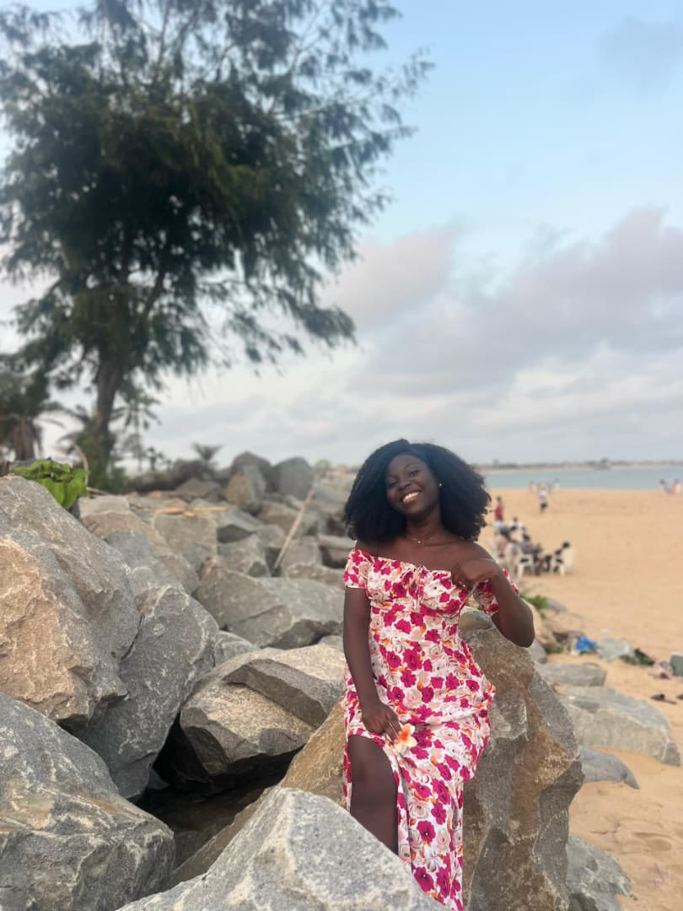

Voila à quoi je ressemble :
Un petit clique sur la photo et vous serrez surpris

Je me nomme Murielle BANKOLE. Je suis étudiante en deuxième année d'informatique plus précisement en Réseau Mobilité Sécurité. Je souhaite devenir ingénieur en cybersécurité ou en telecommunication. J’aime l’idée de toujours apprendre, d’évoluer et d'en savoir plus sur quelque chose. En dehors de mes études, je suis quelqu’un d'introverti. J’aime regarder des films, essayer de nouvelles recettes en cuisine, ecouter la musique et passer du temps avec les gens que j'aime et qui m'aime en retour. Je suis un peu sévère d'après l'avis des autres. J'ai beaucoup de difficultés à faire confiance au autres parce que j'ai toujours peur d'être déçu donc je suis très réservé. Il faut aussi savoir que je n'aime pas vexer les autres donc je me retiens souvent de donner mon avis sur certains sujet mais je suis très VERIDIQUE.